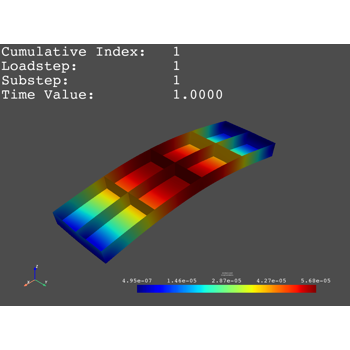

Loading and Visualizing Result Files# Custom Scalar Visualization Custom Scalar Visualization Cylindrical Nodal Stress Cylindrical Nodal Stress Shaft Modal Analysis Shaft Modal Analysis Thermal Analysis Thermal Analysis  Shell Static Analysis Shell Static Analysis